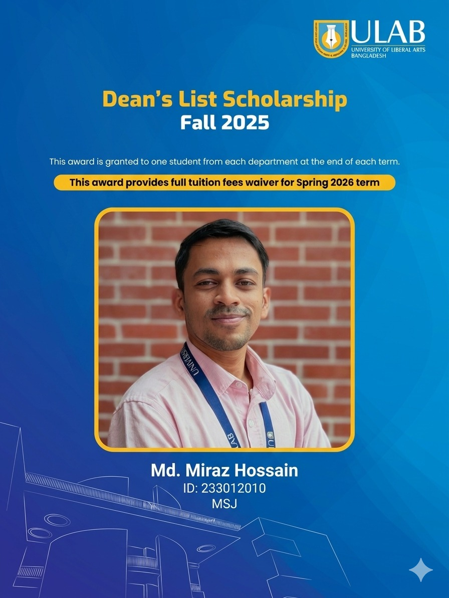
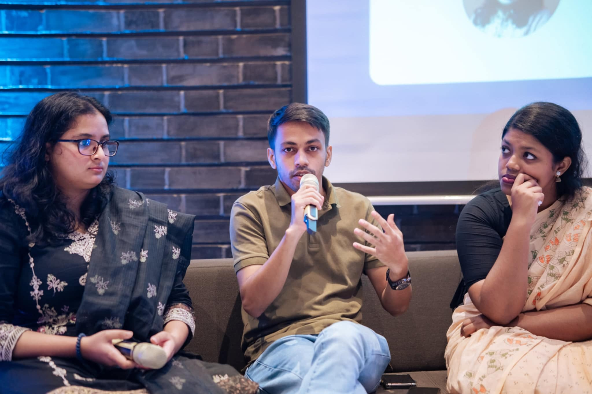
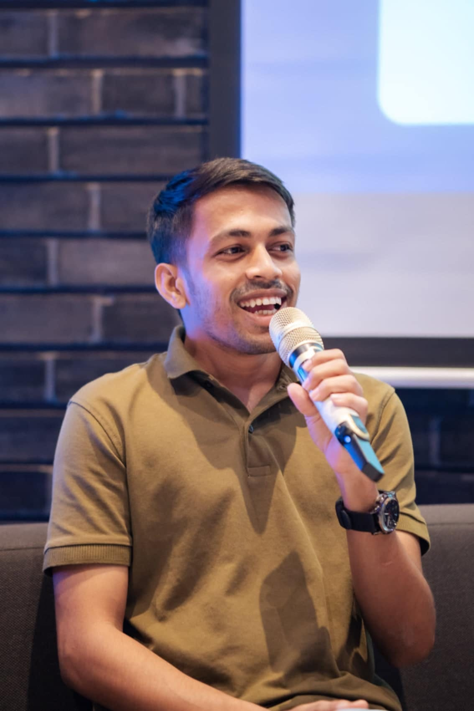

Academic recognition
Dean’s List Scholarship
4 consecutive semesters. One student per department, per term.
Researcher · Journalist · Educator
I study how algorithms reshape truth, trust, and public knowledge — with a focus on South Asia's digital information ecosystems. And I intervene.

Currently doing
BSS in Media Studies and Journalism — 9th Semester
Major: Digital Journalism; Minor: Computer Science
Taking this semester: Public Health & Epidemiology · Mathematics
Currently learning
Python & NetworkX
90-day practice marathon — building graph analysis for media-citation networks
By the numbers

Academic recognition
4 consecutive semesters. One student per department, per term.
ULAB representation · 9 Oct 2025
Selected as one of two students to meet the Ambassador of Kosovo with the Vice Chancellor.
Press freedom · Aug 2024
Attacked while reporting on the July–August uprising for The Business Standard; later named in a CPJ alert.
Also recognised
May 2026 – Present new
Research AssistantFactWatch · ULAB's fact-checking initiative
Supporting Bangladesh's pioneering fact-checking organisation with misinformation tracking, rumour-cascade analysis, verification workflows, and research-facing documentation around the Bangla-language information ecosystem.
Dec 2024 – Nov 2025
Staff CorrespondentNetra News · Sweden-based
Investigated political corruption, military misconduct, and governance failures using OSINT, cross-source verification, and accountability reporting techniques. Browse Netra pieces.
Sep 2022 – Nov 2024; Jan 2026 – Present
Staff Feature WriterThe Business Standard · Dhaka
Published 200+ in-depth features on governance, digital rights, technology, and freedom of expression. Also sub-edited 50+ stories and was named among TBS Best Profiles 2022. Browse TBS archive.
May 2025 – Present
Head of InvestigationsForensIQ · ULAB
Leading misinformation and propaganda investigations, training journalists in OSINT and verification, and building public-interest methods around digital evidence.
May 2025 – Present
Instructor, Academic EnglishCentre for Language Studies · ULAB
Teaching undergraduate academic writing, rhetorical structure, critical communication, and fossilized-error correction across multiple cohorts.
2017 – Present
Freelance Translator & Education ConsultantIndependent · clients include World Bank, Waste Concern, SI-UK Bangladesh
Registered World Bank vendor for English–Bangla translation, with 500+ students counselled, 50+ SOPs edited, and around 100 UK university applications processed.
Current degree
University of Liberal Arts Bangladesh
Sep 2023 – 2027 (expected)
Courses Include:

Earlier degree
University of Dhaka
Jan 2017 – Jun 2023
Your literary, critical, and narrative foundation. This is where the long relationship with literature, language, and interpretation deepened before your work turned more fully toward journalism and media research.
Language study
Institute of Modern Languages, University of Dhaka
Jan 2022 – Mar 2023
Grade: First Division. This A1-level training gave you survival-level communication in Spanish and opened the door to a longer-term commitment to language learning.
German Embassy Dhaka · 29 Oct 2024
I joined the German Embassy Dhaka’s media literacy panel as a young journalist and researcher working at the front line of Bangladesh’s information disorder. The conversation placed my work beside youth leadership, civic resistance, and public-interest journalism.
see interventions

"Miraz writes like someone who has actually read the source material — twice, slowly, and against itself. That makes him unusually useful in a newsroom that is in a hurry."
"He brought verification methods into our seminar that none of us had encountered before. The room got quieter, and then it got better."
"I've worked with a lot of trainers. Miraz is the rare one who teaches what to do when the tool you were taught about doesn't quite work."
"The HPL workshops changed how I approach every exam. Not the content — the method. I wish I had this in year one."
"On the panel, Miraz did the rare thing: he made media literacy sound less like a slogan and more like a civic habit people can actually practice."
"His feedback did not just polish my draft. It helped me understand what the argument was trying to become."